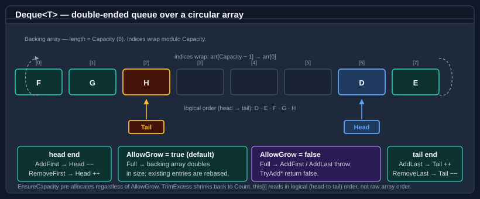

Deque
Deque<T> is a double-ended queue (deque) backed by a contiguous circular array. Elements may be added or removed from either end in amortized O(1) time. The AllowGrow property controls whether the backing array expands automatically when full or whether the deque rejects further inserts — letting one type cover both growable and fixed-capacity scenarios.
For a single-ended FIFO buffer with eviction-on-full semantics, see Circular buffer. For thread-safe concurrent FIFO access, use ConcurrentCircularBuffer<T> (a separate, lock-free implementation).

Head and Tail index into a contiguous backing array but advance modulo Capacity, so the logical sequence may wrap past the end of the array. AddFirst / RemoveFirst operate at the head end; AddLast / RemoveLast operate at the tail end. The indexer this[i] reads in logical order, hiding the wrap from callers.
Deque<T> and CircularBuffer<T> share the RingBackedCollection<T> base, so they share enumeration, copy, indexer, and trim behaviour. Adds and removes at either end are amortised O(1) (the amortisation absorbs the occasional array-doubling pass in growable mode), and the indexer is an O(1) random read. The type accepts null for reference T and permits duplicates.
Note
Enumeration is fail-fast: the deque carries a structural-version counter, and a struct enumerator created by foreach throws InvalidOperationException on the next MoveNext if the deque is structurally mutated — including Clear, TrimExcess, or any add/remove — while the enumerator is live. The struct enumerator means foreach allocates nothing.
Pattern 1 — growable double-ended queue (default)
new Deque<T>() and new Deque<T>(capacity) both produce a growable deque. The capacity argument is a hint — the backing array doubles automatically when filled.
using Bodu.Collections.Generic;
var deque = new Deque<int>();
deque.AddLast(2);
deque.AddFirst(1);
deque.AddLast(3); // contents: 1, 2, 3
int first = deque.RemoveFirst(); // 1
int last = deque.RemoveLast(); // 3
Pattern 2 — fixed-capacity deque that throws when full
Pass allowGrow: false to switch off automatic growth. Adds to a full deque throw InvalidOperationException; the Try* overloads return false without modifying state:
using Bodu.Collections.Generic;
var bounded = new Deque<int>(capacity: 8, allowGrow: false);
for (int i = 0; i < 8; i++)
bounded.AddLast(i);
bool added = bounded.TryAddLast(8); // false — bounded is full
bool full = bounded.IsFull; // true
// Throwing variant:
// bounded.AddLast(8); // InvalidOperationException
Overflow policy — evict from the opposite end
Rejecting is only the default. OverflowPolicy selects what a full, fixed-capacity deque does with the next add: DequeOverflowPolicy.Reject (throw / return false, as above) or DequeOverflowPolicy.EvictOpposite, which silently discards the element at the opposite end to make room — AddFirst drops the tail element, AddLast drops the head element, and Count stays at Capacity. This is the double-ended analogue of Python's collections.deque(maxlen=N):
using Bodu.Collections.Generic;
var recent = new Deque<int>(capacity: 3, allowGrow: false)
{
OverflowPolicy = DequeOverflowPolicy.EvictOpposite,
};
recent.AddLast(1);
recent.AddLast(2);
recent.AddLast(3); // full: 1, 2, 3
recent.AddLast(4); // evicts 1 → 2, 3, 4
recent.AddFirst(0); // evicts 4 → 0, 2, 3
bool added = recent.TryAddLast(5); // true — evicts 0 → 2, 3, 5
EvictOpposite is the deque counterpart of CircularBuffer<T>.AllowOverwrite — the same overwrite-on-full idea, generalised to both ends — and mirrors its event pair: ItemEvicting fires immediately before each eviction (a handler that throws vetoes the eviction in place, leaving the deque unchanged) and ItemEvicted fires immediately after, both carrying the discarded element. Handlers must not mutate the deque itself — mutating members are guarded against re-entry from inside an eviction handler and throw InvalidOperationException if called there.
The policy is consulted only when the deque is full and AllowGrow is false. While AllowGrow is true, growth always wins and nothing is ever evicted, regardless of the configured policy. Assigning a value that is not a defined DequeOverflowPolicy member throws ArgumentOutOfRangeException.
Pattern 3 — sliding window from both ends
Use AddFirst / AddLast together with RemoveFirst / RemoveLast to build a sliding window or undo/redo buffer. (The drop-the-oldest step below is exactly what OverflowPolicy = DequeOverflowPolicy.EvictOpposite automates — shown here in its manual form for when the eviction needs custom logic.)
using Bodu.Collections.Generic;
var recent = new Deque<string>(capacity: 5, allowGrow: false);
void Record(string action)
{
if (recent.IsFull)
recent.RemoveFirst(); // drop the oldest
recent.AddLast(action);
}
Record("open");
Record("edit");
Record("save");
string mostRecent = recent.PeekLast(); // "save"
Pattern 4 — peek without removing
using Bodu.Collections.Generic;
var deque = new Deque<int>();
deque.AddLast(10);
deque.AddLast(20);
if (deque.TryPeekFirst(out int head)) Console.WriteLine(head); // 10
if (deque.TryPeekLast(out int tail)) Console.WriteLine(tail); // 20
// Throwing variants:
int h = deque.PeekFirst(); // 10
int t = deque.PeekLast(); // 20
Pattern 5 — toggling between growable and fixed at runtime
AllowGrow is a settable property. Toggling from true to false does not shrink the existing capacity — call TrimExcess afterwards if a smaller footprint is wanted.
using Bodu.Collections.Generic;
var deque = new Deque<int>(capacity: 4); // growable
for (int i = 0; i < 100; i++)
deque.AddLast(i); // backing array grows past 4
// Lock the deque to its current size so subsequent adds are rejected:
deque.AllowGrow = false;
bool added = deque.TryAddLast(101); // false — at capacity
// Switch back to growable later if needed:
deque.AllowGrow = true;
deque.AddLast(101); // OK; grows again
Pattern 6 — pre-grow with EnsureCapacity
EnsureCapacity works regardless of AllowGrow — it is the explicit pre-grow hatch even on fixed-capacity deques. Use it to reserve space ahead of a known burst of inserts:
using Bodu.Collections.Generic;
var deque = new Deque<int>(capacity: 4, allowGrow: false);
deque.EnsureCapacity(10_000); // pre-allocate; AllowGrow stays false
for (int i = 0; i < 10_000; i++)
deque.AddLast(i); // no throws — capacity already covers it
Growth and seeding
In growable mode the backing array doubles on overflow — the new capacity is twice the current one (with a small floor for tiny deques), capped at MaxLength. Doubling keeps the per-element cost amortised O(1) over a run of appends.
A deque can be seeded from a sequence. When the source is longer than the supplied capacity, growable mode bumps the capacity to fit the whole source (nothing is dropped), whereas allowGrow: false with an over-long source throws InvalidOperationException. The default capacity is 16 and the default allowGrow is true on every constructor overload:
using Bodu.Collections.Generic;
var grown = new Deque<int>(new[] { 1, 2, 3, 4, 5 }, capacity: 2); // grows to fit: holds all 5
// var fail = new Deque<int>(new[] { 1, 2, 3 }, capacity: 2, allowGrow: false); // InvalidOperationException
API summary
| Member | Description |
|---|---|
AddFirst(T) |
Adds an element at the head. On a full fixed-capacity deque, throws under Reject or evicts the tail element under EvictOpposite. |
AddLast(T) |
Adds an element at the tail. On a full fixed-capacity deque, throws under Reject or evicts the head element under EvictOpposite. |
TryAddFirst(T) / TryAddLast(T) |
Non-throwing variants. Return false only when full, AllowGrow is false, and OverflowPolicy is Reject; otherwise true (growing or evicting as configured). |
RemoveFirst() / RemoveLast() |
Removes and returns the head or tail element. Throws if empty. |
TryRemoveFirst(out T) / TryRemoveLast(out T) |
Non-throwing remove variants; return false if empty. |
PeekFirst() / PeekLast() |
Reads the head or tail element without removing it. Throws if empty. |
TryPeekFirst(out T) / TryPeekLast(out T) |
Non-throwing peek variants; return false if empty. |
Count |
The number of elements currently in the deque. |
Capacity |
The current backing-array length. Mutable in growable mode. |
IsEmpty |
true when Count == 0. |
IsFull |
true when Count == Capacity. |
AllowGrow |
Whether the backing array expands automatically when full. Settable at runtime. While true, growth wins and OverflowPolicy is never consulted. |
OverflowPolicy |
How a full fixed-capacity deque handles adds: Reject (default — throw / false) or EvictOpposite (Python deque(maxlen=N) semantics). |
ItemEvicting / ItemEvicted |
Events raised around each EvictOpposite eviction with the discarded element. A throwing ItemEvicting handler vetoes the eviction in place. |
EnsureCapacity(int) |
Expands the backing array to hold at least the requested capacity. Ignores AllowGrow. |
Clear() |
Removes all elements; capacity unchanged. |
TrimExcess() |
Shrinks the backing array to Count (or 1 when empty). |
ToArray() |
Returns a snapshot in head-to-tail logical order. |
this[int] |
Read-only indexer in head-to-tail logical order. |
Where to go next
- Circular buffer — fixed-capacity FIFO with eviction-on-full semantics.
- Evicting dictionary — fixed-capacity key-value cache with LRU / LFU / FIFO eviction.
- Bodu.Collections guide index — all key types at a glance.
- Bodu.Collections.Generic API reference — full namespace overview.
- Core Foundations guides — every guide in this topic.